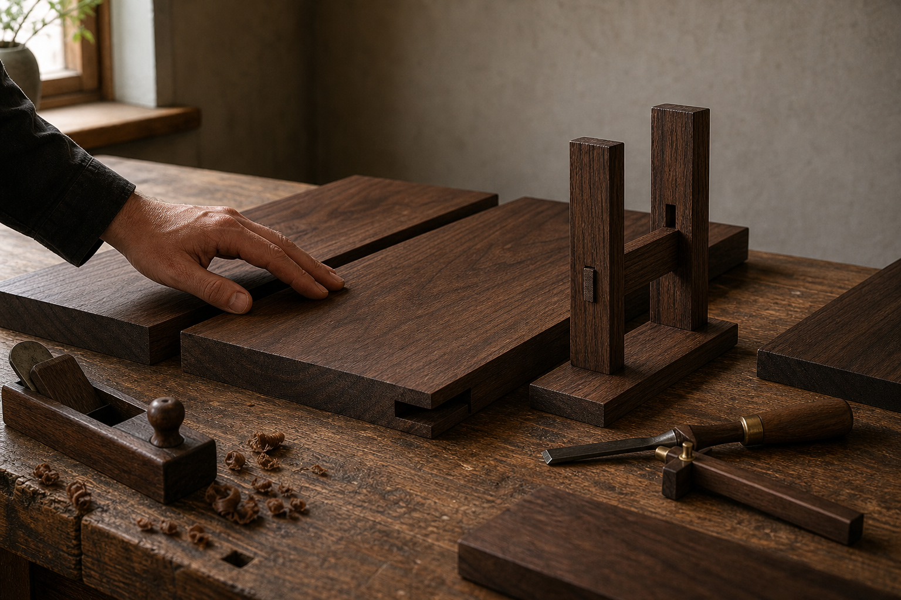
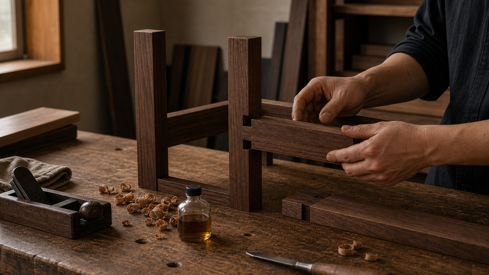

About
나무의 성질을 읽고 구조로 답하는 가구
목간은 목재를 단순한 재료가 아니라 시간과 방향성을 가진 물성으로 바라봅니다. 나무는 결의 흐름, 수축과 팽창, 빛에 따른 색의 변화까지 스스로의 질서를 가지고 있습니다. 좋은 가구는 그 질서를 억누르지 않고, 구조와 비례 안에서 자연스럽게 받아낼 때 오래 균형을 유지합니다.
목수의 일은 형태를 만드는 것에서 끝나지 않습니다. 하중이 흐르는 방향, 부재가 만나는 방식, 손이 닿는 모서리, 마감 뒤에 남는 촉감까지 판단하는 일입니다. 보이는 면은 단정해야 하고, 보이지 않는 곳의 구조는 더 정직해야 합니다. 목간은 그 기준을 가구의 기본으로 삼습니다.
매일 가까이 쓰이는 가구일수록 과한 장식보다 정확한 비례와 안정된 구조가 중요합니다. 목간은 공간 안에서 조용히 자리를 잡고, 시간이 지날수록 나무의 표정과 사용자의 생활이 함께 깊어지는 가구를 지향합니다.

Making
정직한 구조와 조용한 아름다움
원목은 습도와 온도, 빛과 사용 습관에 반응합니다. 그래서 목간은 수종, 구조, 마감을 따로 보지 않습니다. 보이지 않는 곳의 짜임과 하중을 받는 방향, 손이 닿는 모서리까지 하나의 사용 경험으로 연결해 생각합니다. 좋은 가구는 완성된 순간뿐 아니라 사용하는 시간 속에서도 균형을 잃지 않아야 한다고 믿습니다.
